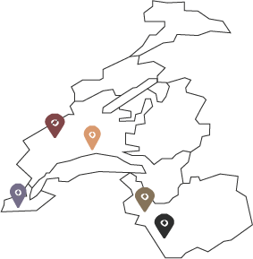
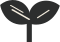
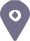
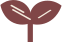
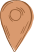
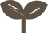

Semences de pays
Semences de pays développe une production de semences reproductibles, rustiques et adaptées à une agriculture biologique proche des cycles de la nature, en collaboration avec les initiatives nourricières de proximité.
Nos semences
Découvrez nos trésors de biodiversité sur le shop!
Points de vente


Le Grainier :Route des Mines de Sel1880 Bex

Chez MamieRue des Rois 171204 Genève

Le TopinambourAvenue William-Fraisse 91006 Lausanne

Ferme du JoranChemin des Philosophes 151350 Orbe

Nouvelle Terre :Rue du Grand-Verger 121920 Martigny